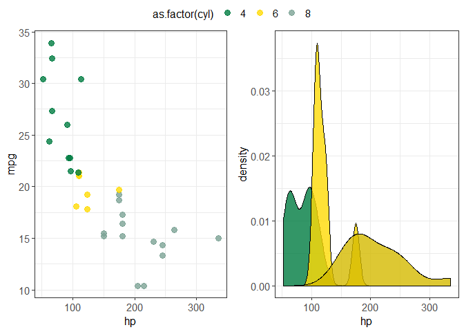
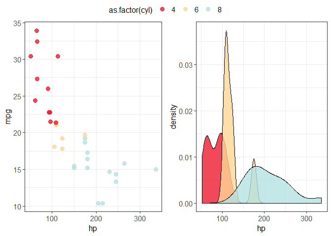
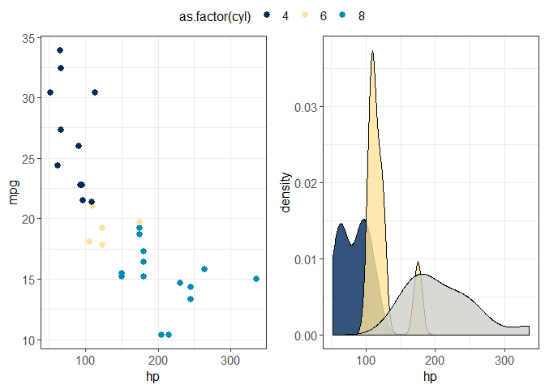
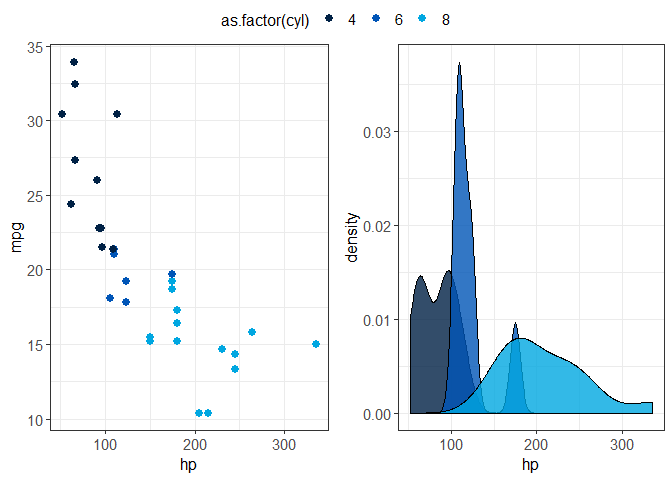

A visual identity allows an organization to be instantly recognizable. Comprised of their logo, typeface, and colours, it is applied when creating external or internal communications. At universities, staff create visualizations that adhere to the colour palette specified by their institution’s visual identity guidelines. For example, on the Students and Alumni page of UBC Master of Data Science website, the visualizations all adhere to the colour palette specified by UBC’s visual identity guideline.
This R package allows users to apply university-specific themes to ggplot2 objects. This package currently supports the official colour palettes of four institutions belonging to the U15 Group of Canadian Research Universities: the University of Alberta, the University of British Columbia, McGill University, and the University of Toronto. In the future, we hope to extend this package to support the visual identities of all universities in the association.
hueniverrrsity in the R ecosystem
The hueniverrrsity package fits into the R ecosystem with other R packages that allow users to change the theme of ggplot2 objects. These types of packages allow general aesthetic theme changes or specific theme changes for a purpose. One of the most common packages of this type is ggthemes, which allows users to select and apply different general themes to ggplot2 objects. Our package will be different from ggthemes since the goal of the change in plot theme is to adhere to university-specific colour palettes, rather than to generally change the colour and appearance of plots.
Installation
You can install the development version of hueniverrrsity from GitHub with:
# install.packages("devtools")
devtools::install_github("UBC-MDS/hueniverrrsity")Usage
Start by importing the following packages:
theme_alberta()
Input:
-
colour_use:fillorcolour-
colour_use = colourforgeom_point()andgeom_line() -
colour_use = fillforgeom_boxplot(),geom_bar(),geom_violin()andgeom_histogram()
-
-
colour_palette:alpha,beta,gammaordelta
Available palettes:
alpha 
beta 
gamma 
delta 
Output:
- A ggplot2 object in line with the University of Alberta’s visual identity
Examples:
# Create scatter plot
a1 <- ggplot(data=mtcars, aes(x = hp, y = mpg, colour = as.factor(cyl))) +
geom_point(size = 3, alpha = 0.8) +
theme_alberta('colour', 'beta')
# Create density plot
a2 <- ggplot(data = mtcars, aes(x = hp, fill = as.factor(cyl))) +
geom_density(alpha = 0.8) +
theme_alberta('fill', 'delta')
ggarrange(a1, a2, ncol=2, common.legend = TRUE)
theme_mcgill()
Input:
-
colour_use:fillorcolour-
colour_use = colourforgeom_point()andgeom_line() -
colour_use = fillforgeom_boxplot(),geom_bar(),geom_violin()andgeom_histogram()
-
Available palette:

Output:
- A ggplot2 object in line with McGill University’s visual identity
Examples:
# Create scatter plot
m1 <- ggplot(data = mtcars, aes(x = hp, y = mpg, colour = as.factor(cyl))) +
geom_point(size = 3, alpha = 0.8) +
theme_mcgill('colour')
# Create density plot
m2 <- ggplot(data = mtcars, aes(x = hp, fill = as.factor(cyl))) +
geom_density(alpha=0.8) +
theme_mcgill('fill')
ggarrange(m1, m2, ncol=2, common.legend = TRUE)
theme_toronto()
Input:
-
colour_use:fillorcolour-
colour_use = colourforgeom_point()andgeom_line() -
colour_use = fillforgeom_boxplot(),geom_bar(),geom_violin()andgeom_histogram()
-
-
colour_palette:vibrant,coolorawards
Available palettes:
vibrant 
cool 
awards 
Output:
- A ggplot2 object in line with the University of Toronto’s visual identity
Examples:
# Create scatter plot
t1 <- ggplot(data = mtcars, aes(x = hp, y = mpg, colour = as.factor(cyl))) +
geom_point(size = 2.5) +
theme_toronto('colour', 'vibrant')
# Create density plot
t2 <- ggplot(data = mtcars, aes(x = hp, fill = as.factor(cyl))) +
geom_density(alpha = 0.8) +
theme_toronto('fill', 'awards')
ggarrange(t1, t2, ncol=2, common.legend = TRUE)
theme_ubc()
Input:
-
colour_use:fillorcolour-
colour_use = colourforgeom_point()andgeom_line() -
colour_use = fillforgeom_boxplot(),geom_bar(),geom_violin()andgeom_histogram()
-
Available palette:

Output:
- A ggplot2 object in line with the University of British Columbia’s visual identity
Examples:
# Create scatter plot
u1 <- ggplot(data = mtcars, aes(x = hp, y = mpg, colour = as.factor(cyl))) +
geom_point(size = 2.5) +
theme_ubc('colour')
# Create density plot
u2 <- ggplot(data = mtcars, aes(x = hp, fill = as.factor(cyl))) +
geom_density(alpha=0.8) +
theme_ubc('fill')
ggarrange(u1, u2, ncol=2, common.legend = TRUE)